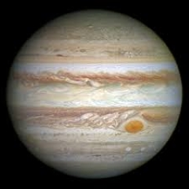

Jupiter
Named after the Roman king of the gods, Jupiter is fitting of its name. With a mass of 1.90 x 1027 kg and a mean diameter of 139,822 km, Jupiter is easily the largest and most massive planet in the Solar System. To put this in perspective, it would take 11 Earths lined up next to each other to stretch from one side of Jupiter to the other and it would take 317 Earths to equal the mass of Jupiter.
- The first recorded sighting of Jupiter were by the ancient Babylonians in around 7th or 8th BC. It is named for Jupiter, the king of the Roman gods and god of the Sky. The Greek equivalent is Zeus, god of thunder. For the Mesopotamians, he was the god Marduk and patron of the city of Babylon. Germanic tribes saw the planet as Donar, also known as Thor.
- When Galileo discovered the four moons of Jupiter in 1610 this was the first proof of celestial bodies orbiting something other than Earth. The discovery also provided further evidence of Copernicus’ Sun-centred solar system model.
- Jupiter has the shortest day of the eight planets. The planet rotates very Jupiter rotates very quickly, turning on its axis once every 9 hours and 55 minutes. This rapid rotation is also what causes the flattening effect of the planet, which is why it has an oblate shape.
- One orbit of the Sun takes Jupiter 11.86 Earth years. This means that when viewed from Earth, the planet appears to move very slowly in the sky. It takes months for Jupiter to move from one constellation to the next.
- Jupiter has a faint ring system around it. Its ring is mostly comprised of dust particles from some of Jupiter’s moons during impacts from comets and asteroids. The ring system begins about 92,000 km above Jupiter’s clouds and reaches more than 225,000 km from the planet. The rings are somewhere between 2,000-12,500 km thick.
- Jupiter has at least 67 moons in satellite around the planet. This includes the four large moons called the Galilean moons that were first discovered by Galileo Galilei in 1610.
- The largest of Jupiter’s moons, Ganymede is the largest moon in the solar system. The moons are sometimes called the Jovian satellites and the largest of them are Ganymede, Callisto, Io and Europa. Ganymede is larger than the planet Mercury with a diameter of around 5,268 km.
- Jupiter has a very strong magnetic field. This is around 14 times stronger than the magnetic field found on Earth – the largest of any planet in the solar system.
- Jupiter is the fourth brightest object in our solar system. After the Sun, the Moon and Venus, Jupiter is the brightest and is one of five planets which can be seen by naked eye from Earth.
Source: https://theplanets.org/jupiter/